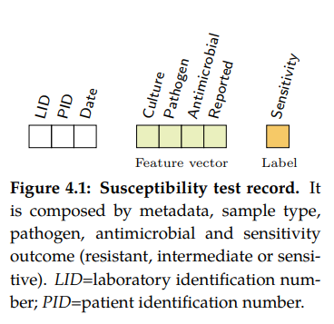

Note
Click here to download the full example code
Step 01 - Introduction
Loading data
{kind=link}
A Susceptibility test record (see figure 4.1) is composed by laboratory
identification number (LID), patient identification number (PID), date, sample
type, specimen or culture (e.g. blood or urine), pathogen, antimicrobial, reported
status and outcome (resistant, sensitive or intermediate). In this research,
the susceptibility test data were grouped firstly by specimen type. Moreover,
for each sample type, the data were grouped by pairs (pathogen, antimicrobial)
since it is widely accepted by clinicians as detailed in the UK five year
strategy in AMR
A small dataset will be used for this example.
29 # Libraries
30 import numpy as np
31 import pandas as pd
32 import seaborn as sns
33 import matplotlib as mpl
34 import matplotlib.pyplot as plt
35
36 # Import from pyAMR
37 from pyamr.datasets.load import make_susceptibility
38
39 # -------------------------------------------
40 # Load data
41 # -------------------------------------------
42 # Load data
43 data = make_susceptibility()
44 data = data.drop_duplicates()
45
46 # Show
47 print("\nData:")
48 print(data)
49 print("\nColumns:")
50 print(data.dtypes)
51
52 # -------------------------------------------
53 # Show a brief description
54 # -------------------------------------------
55 # .. todo: Compute basic information such as the number of unique organisms,
56 # antimicrobials, pairs, species, isolates, tests, the range of
57 # dates, ....
Out:
Data:
date_received date_outcome patient_id laboratory_number specimen_code specimen_name ... antimicrobial_code antimicrobial_name sensitivity_method sensitivity mic reported
0 2009-01-03 NaN 20091 X428501 BLDCUL NaN ... AAMI amikacin NaN sensitive NaN NaN
1 2009-01-03 NaN 20091 X428501 BLDCUL NaN ... AAMO amoxycillin NaN resistant NaN NaN
2 2009-01-03 NaN 20091 X428501 BLDCUL NaN ... AAUG augmentin NaN sensitive NaN NaN
3 2009-01-03 NaN 20091 X428501 BLDCUL NaN ... AAZT aztreonam NaN sensitive NaN NaN
4 2009-01-03 NaN 20091 X428501 BLDCUL NaN ... ACAZ ceftazidime NaN sensitive NaN NaN
... ... ... ... ... ... ... ... ... ... ... ... .. ...
319117 2009-12-31 NaN 24645 H2012337 BLDCUL NaN ... AAMO amoxycillin NaN sensitive NaN NaN
319118 2009-12-31 NaN 24645 H2012337 BLDCUL NaN ... ALIN linezolid NaN sensitive NaN NaN
319119 2009-12-31 NaN 24645 H2012337 BLDCUL NaN ... ASYN synercid NaN resistant NaN NaN
319120 2009-12-31 NaN 24645 H2012337 BLDCUL NaN ... ATEI teicoplanin NaN sensitive NaN NaN
319121 2009-12-31 NaN 24645 H2012337 BLDCUL NaN ... AVAN vancomycin NaN sensitive NaN NaN
[319122 rows x 15 columns]
Columns:
date_received object
date_outcome float64
patient_id int64
laboratory_number object
specimen_code object
specimen_name float64
specimen_description object
microorganism_code object
microorganism_name object
antimicrobial_code object
antimicrobial_name object
sensitivity_method float64
sensitivity object
mic float64
reported float64
dtype: object
Computing SARI
The Single Antimicrobial Resistance Index - SARI - describes the proportion
of resistant isolates for a given set of susceptibility tests. It provides a
value within the range [0, 1] where values close to one indicate high resistance.
It is agnostic to pathogen, antibiotic and/or time. The variables R, I and
S represent the number of susceptibility tests with Resistant, Intermediate and
Susceptible outcomes respectively. The definition might vary slightly since the
intermediate category is not always considered.
The parameter strategy accepts the following options:
softas R / R+I+S
mediumas R / R+S
hardas R+I / R+I+S
otheras R+0.5I / R+0.5I+S
For more information see: pyamr.core.sari.SARI
For more examples see:
89 # -------------------------------------------
90 # Compute SARI
91 # -------------------------------------------
92 # Libraries
93 from pyamr.core.sari import SARI
94
95 # Create sari instance
96 sari = SARI(groupby=['specimen_code',
97 'microorganism_name',
98 'antimicrobial_name',
99 'sensitivity'])
100
101 # Compute SARI overall
102 sari_overall = sari.compute(data,
103 return_frequencies=True)
104
105 # Show
106 print("SARI (overall):")
107 print(sari_overall)
108
109 # Plot Heatmap
110 # ------------
111 # Filter
112 matrix = sari_overall.copy(deep=True)
113 matrix = matrix.reset_index()
114 matrix = matrix[matrix.freq > 100]
115 matrix = matrix[matrix.specimen_code.isin(['BLDCUL'])]
116
117 # Pivot table
118 matrix = pd.pivot_table(matrix,
119 index='microorganism_name',
120 columns='antimicrobial_name',
121 values='sari')
122
123 # Create figure
124 f, ax = plt.subplots(1, 1, figsize=(10, 4))
125
126 # Create colormap
127 cmap = sns.color_palette("Reds", desat=0.5, n_colors=10)
128
129 # Plot
130 ax = sns.heatmap(data=matrix*100, annot=True, fmt=".0f",
131 annot_kws={'fontsize': 'small'}, cmap=cmap,
132 linewidth=0.5, vmin=0, vmax=100, ax=ax,
133 xticklabels=1, yticklabels=1)
134
135 # Add title
136 plt.suptitle("Antibiogram", fontsize='xx-large')
137
138 # Tight layout
139 plt.tight_layout()
140 plt.subplots_adjust(right=1.05)

Out:
SARI (overall):
sensitivity intermediate resistant sensitive freq sari
specimen_code microorganism_name antimicrobial_name
BFLCUL anaerobes metronidazole 0.0 0.0 1.0 1.0 0.000000
bacillus ciprofloxacin 0.0 0.0 1.0 1.0 0.000000
clindamycin 0.0 3.0 1.0 4.0 0.750000
erythromycin 0.0 1.0 3.0 4.0 0.250000
fusidic acid 0.0 3.0 1.0 4.0 0.750000
... ... ... ... ... ...
XINCUL streptococcus beta-haemolytic group b cephalexin 0.0 1.0 0.0 1.0 1.000000
clindamycin 0.0 1.0 8.0 9.0 0.111111
erythromycin 0.0 1.0 8.0 9.0 0.111111
penicillin 0.0 0.0 9.0 9.0 0.000000
tetracycline 0.0 8.0 1.0 9.0 0.888889
[4491 rows x 5 columns]
Computing ASAI
The antimicrobial spectrum of activity refers to the range of microbe species that are susceptible to these agents and therefore can be treated. In general, antimicrobial agents are classified into broad, intermediate or narrow spectrum. Broad spectrum antimicrobials are active against both Gram-positive and Gram-negative bacteria. In contrast, narrow spectrum antimicrobials have limited activity and are effective only against particular species of bacteria. While these profiles appeared in the mid-1950s, little effort has been made to define them. Furthermore, such ambiguous labels are overused for different and even contradictory purposes.
In order to compute the antimicrobial spectrum of activity index - ASAI -, it
is necessary to previously obtain the overall resistance (SARI) for all the
microbe-antimicrobial pairs. Furthermore, by following the criteria used in the
narrow-broad approach, these pairs were grouped into Gram-positive and Gram-negative.
Briefly, the weighted proportion of species to which the antimicrobial
is effective is computed for each genus. These are later added up and normalized by
the number of genera tested. An antimicrobial is considered effective to treat a
particular species when the corresponding resistance index (SARI) is lower than
a given threshold.
For more information see: pyamr.core.asai.ASAI
For more examples see:
In order to compute ASAI, we need to at least have columns with the following
information:
antimicrobial
microorganism genus
microorganism species
resistance
Moreover, in this example we will compute the ASAI for each gram_stain category
independently so we will need the microorganism gram stain information too. This
information is available in the registries: pyamr.datasets.registries
Lets include all this information using the MicroorganismRegistry.
191 # ------------------------------
192 # Include gram stain
193 # ------------------------------
194 # Libraries
195 from pyamr.datasets.registries import MicroorganismRegistry
196
197 # Load registry
198 mreg = MicroorganismRegistry()
199
200 # Format sari dataframe
201 dataframe = sari_overall.copy(deep=True)
202 dataframe = dataframe.reset_index()
203
204 # Create genus and species
205 dataframe[['genus', 'species']] = \
206 dataframe.microorganism_name \
207 .str.capitalize() \
208 .str.split(expand=True, n=1)
209
210 # Combine with registry information
211 dataframe = mreg.combine(dataframe, on='microorganism_name')
212
213 # Fill missing gram stain
214 dataframe.gram_stain = dataframe.gram_stain.fillna('u')
Now that we have the genus, species and gram_stain information,
lets compute ASAI.
222 # -------------------------------------------
223 # Compute ASAI
224 # -------------------------------------------
225 # Import specific libraries
226 from pyamr.core.asai import ASAI
227
228 # Create asai instance
229 asai = ASAI(column_genus='genus',
230 column_specie='species',
231 column_resistance='sari',
232 column_frequency='freq')
233
234 # Compute
235 scores = asai.compute(dataframe,
236 groupby=['specimen_code',
237 'antimicrobial_name',
238 'gram_stain'],
239 weights='uniform',
240 threshold=0.5,
241 min_freq=0)
242
243 # Stack
244 scores = scores.unstack()
245
246 # Filter and drop index.
247 scores = scores.filter(like='URICUL', axis=0)
248 scores.index = scores.index.droplevel()
249
250 # Show
251 print("\nASAI (overall):")
252 print(scores)
Out:
c:\users\kelda\desktop\repositories\github\pyamr\main\pyamr\core\asai.py:530: UserWarning:
Extreme resistances were found in the DataFrame. These rows
should be reviewed since these resistances might correspond
to pairs with low number of records.
c:\users\kelda\desktop\repositories\github\pyamr\main\pyamr\core\asai.py:544: UserWarning:
There are NULL values in columns that are required. These
rows will be ignored to safely compute ASAI. Please review
the DataFrame and address this inconsistencies. See below
for more information:
specimen_code 0
antimicrobial_name 0
gram_stain 0
GENUS 0
SPECIE 2414
RESISTANCE 0
ASAI (overall):
N_GENUS N_SPECIE ASAI_SCORE
gram_stain n p u n p u n p u
antimicrobial_name
amikacin 5.0 NaN NaN 5.0 NaN NaN 1.000000 NaN NaN
amoxycillin 2.0 2.0 NaN 2.0 7.0 NaN 0.500000 0.833333 NaN
amp c markers 4.0 NaN NaN 4.0 NaN NaN 0.250000 NaN NaN
augmentin 5.0 2.0 NaN 5.0 7.0 NaN 0.200000 1.000000 NaN
aztreonam 3.0 NaN NaN 3.0 NaN NaN 0.666667 NaN NaN
cefotaxime 5.0 NaN NaN 5.0 NaN NaN 0.200000 NaN NaN
cefoxitin 5.0 NaN NaN 5.0 NaN NaN 0.400000 NaN NaN
cefpodoxime 5.0 2.0 NaN 5.0 5.0 NaN 0.400000 0.833333 NaN
ceftazidime 5.0 NaN NaN 5.0 NaN NaN 0.600000 NaN NaN
cefuroxime 5.0 NaN NaN 5.0 NaN NaN 0.000000 NaN NaN
cephalexin 5.0 2.0 NaN 5.0 7.0 NaN 0.200000 0.875000 NaN
ciprofloxacin 6.0 2.0 NaN 6.0 7.0 NaN 0.833333 1.000000 NaN
clindamycin NaN 2.0 NaN NaN 4.0 NaN NaN 1.000000 NaN
colistin sulphate 5.0 NaN NaN 5.0 NaN NaN 0.800000 NaN NaN
cotrimoxazole 3.0 NaN NaN 3.0 NaN NaN 0.666667 NaN NaN
ertapenem 3.0 NaN NaN 3.0 NaN NaN 0.666667 NaN NaN
erythromycin NaN 2.0 NaN NaN 6.0 NaN NaN 0.833333 NaN
esbl markers 5.0 NaN NaN 5.0 NaN NaN 0.200000 NaN NaN
flucloxacillin 1.0 1.0 NaN 1.0 3.0 NaN 0.000000 1.000000 NaN
fusidic acid NaN 1.0 NaN NaN 3.0 NaN NaN 0.666667 NaN
gentamicin 5.0 1.0 NaN 5.0 3.0 NaN 0.800000 1.000000 NaN
imipenem 5.0 NaN NaN 5.0 NaN NaN 0.800000 NaN NaN
linezolid NaN 1.0 NaN NaN 3.0 NaN NaN 1.000000 NaN
mecillinam 5.0 NaN NaN 5.0 NaN NaN 0.400000 NaN NaN
meropenem 5.0 NaN NaN 5.0 NaN NaN 0.600000 NaN NaN
mls markers NaN 1.0 NaN NaN 3.0 NaN NaN 0.333333 NaN
mupirocin NaN 1.0 NaN NaN 2.0 NaN NaN 1.000000 NaN
naladixic acid 1.0 NaN NaN 1.0 NaN NaN 1.000000 NaN NaN
nitrofurantoin 5.0 2.0 NaN 5.0 7.0 NaN 0.200000 1.000000 NaN
novobiocin 1.0 1.0 NaN 1.0 3.0 NaN 0.000000 0.666667 NaN
penicillin 1.0 2.0 NaN 1.0 6.0 NaN 0.000000 0.500000 NaN
rifampicin NaN 1.0 NaN NaN 3.0 NaN NaN 1.000000 NaN
sulphamethoxazole 2.0 NaN NaN 2.0 NaN NaN 0.500000 NaN NaN
tazocin 5.0 NaN NaN 5.0 NaN NaN 1.000000 NaN NaN
teicoplanin NaN 2.0 NaN NaN 7.0 NaN NaN 1.000000 NaN
temocillin 3.0 NaN NaN 3.0 NaN NaN 0.666667 NaN NaN
tetracycline 1.0 2.0 NaN 1.0 6.0 NaN 1.000000 0.833333 NaN
timentin 4.0 NaN NaN 4.0 NaN NaN 0.750000 NaN NaN
tobramycin 5.0 NaN NaN 5.0 NaN NaN 0.600000 NaN NaN
trimethoprim 5.0 2.0 NaN 5.0 7.0 NaN 0.200000 1.000000 NaN
vancomycin NaN 2.0 NaN NaN 7.0 NaN NaN 1.000000 NaN
Lets plot it now!
258 # ----------------
259 # Helper method
260 # ----------------
261 def scalar_colormap(values, cmap, vmin, vmax):
262 """This method creates a colormap based on values.
263
264 Parameters
265 ----------
266 values : array-like
267 The values to create the corresponding colors
268
269 cmap : str
270 The colormap
271
272 vmin, vmax : float
273 The minimum and maximum possible values
274
275 Returns
276 -------
277 scalar colormap
278 """
279 # Create scalar mappable
280 norm = mpl.colors.Normalize(vmin=vmin, vmax=vmax, clip=True)
281 mapper = mpl.cm.ScalarMappable(norm=norm, cmap=cmap)
282 # Gete color map
283 colormap = sns.color_palette([mapper.to_rgba(i) for i in values])
284 # Return
285 return colormap
286
287 # ---------------------------------------------------------------
288 # Plot
289 # ---------------------------------------------------------------
290 # .. note: In order to sort the scores we need to compute metrics
291 # that combine the different subcategories (e.g. gram-negative
292 # and gram-positive). Two possible options are: (i) use the
293 # gmean or (ii) the width.
294 # Measures
295 scores['width'] = np.abs(scores['ASAI_SCORE'].sum(axis=1))
296
297 # Variables to plot.
298 x = scores.index.values
299 y_n = scores['ASAI_SCORE']['n'].values
300 y_p = scores['ASAI_SCORE']['p'].values
301 y_u = scores['ASAI_SCORE']['u'].values
302
303 # Constants
304 colormap_p = scalar_colormap(y_p, cmap='Blues', vmin=-0.1, vmax=1.1)
305 colormap_n = scalar_colormap(y_n, cmap='Reds', vmin=-0.1, vmax=1.1)
306 colormap_u = scalar_colormap(y_u, cmap='Greens', vmin=-0.1, vmax=1.1)
307
308 # ----------
309 # Example
310 # ----------
311 # This example shows an stacked figure using more than two categories.
312 # For instance, it uses gram-positive, gram-negative and gram-unknown.
313 # All the indexes go within the range [0,1].
314 # Create the figure
315 f, axes = plt.subplots(1, 3, figsize=(7, 9))
316
317 # Plot each category
318 sns.barplot(x=y_p, y=x, palette=colormap_p, ax=axes[0], orient='h',
319 saturation=0.5, label='Gram-positive')
320 sns.barplot(x=y_n, y=x, palette=colormap_n, ax=axes[1], orient='h',
321 saturation=0.5, label='Gram-negative')
322 sns.barplot(x=y_u, y=x, palette=colormap_u, ax=axes[2], orient='h',
323 saturation=0.5, label='Gram-unknown')
324
325 # Configure
326 sns.despine(bottom=True)
327
328 # Format figure
329 plt.subplots_adjust(wspace=0.0, hspace=0.0)
330
331 # Remove yticks
332 axes[1].set_yticks([])
333 axes[2].set_yticks([])
334
335 # Set title
336 axes[0].set_title('Gram-positive')
337 axes[1].set_title('Gram-negative')
338 axes[2].set_title('Gram-unknown')
339
340 # Set x-axis
341 axes[0].set_xlim([0, 1.1])
342 axes[1].set_xlim([0, 1.1])
343 axes[2].set_xlim([0, 1.1])
344
345 # Adjust
346 plt.tight_layout()
347
348 # Show
349 plt.show()
350 plt.close('all')
Computing SART
The antimicrobial resistance trend…
Warning
To include.
Dirty code to use and or delete
368 """
369
370 Summary
371
372 summary = data.agg(
373 norganisms=('organismCode', 'nunique'),
374 nantibiotics=('antibioticCode', 'nunique'),
375 ncultures=('orderCode', 'nunique'),
376 ntests=('labNumber', 'nunique')
377 )
378
379 print(summary)
380
381 print(data.nunique())
382
383
384 print(len(data.groupby(['organismCode', 'antibioticCode'])))
385 print(data.shape[0])
386
387 summary = pd.DataFrame
388
389
390 #from analysis.microbiology.statistics.frequency import Frequency
391
392 # -----------------------------------------------------------------------------
393 # CONSTANTS
394 # -----------------------------------------------------------------------------
395 # Paths
396 fname_tests = "freq_tests_pairs_year"
397 fname_isola = "freq_isolates_pairs_year"
398 fpath_tests = "../../results/microbiology/frequencies/%s.csv" % fname_tests
399 fpath_isola = "../../results/microbiology/frequencies/%s.csv" % fname_isola
400
401 # Object
402 freq = Frequency()
403
404 # Read data
405 dff_tests = freq.load(fpath_tests)
406 dff_isola = freq.load(fpath_isola)
407 dff_reset = dff_tests.reset_index()
408
409 # Basic dataframe.
410 # IMPORTANT. Note that isolates refer to a single infectious organism which
411 # is tested against many different anttibiotics. Hence the only way the sum
412 # refers to isolate is by grouping the laboratory tests by infectious
413 # organisms.
414 dfy = pd.DataFrame()
415 dfy['Tests'] = dff_tests['freq_ris'].groupby(level=[0]).sum()
416 dfy['Isolates'] = dff_isola['freq'].groupby(level=[0]).sum()
417 dfy['Tests/Isolates'] = dfy['Tests'].div(dfy['Isolates'])
418 dfy['Antibiotics'] = dff_reset.groupby('dateReceived').antibioticCode.nunique()
419 dfy['Organisms'] = dff_reset.groupby('dateReceived').organismCode.nunique()
420
421 # Fill last row.
422 dfy.loc['Total',:] = np.nan
423 dfy.loc['Total','Tests'] = dfy['Tests'].sum(axis=0)
424 dfy.loc['Total','Isolates'] = dfy['Isolates'].sum(axis=0)
425 dfy.loc['Total','Tests/Isolates'] = dfy['Tests/Isolates'].mean()
426 dfy.loc['Total','Antibiotics'] = dff_reset.antibioticCode.nunique()
427 dfy.loc['Total','Organisms'] = dff_reset.organismCode.nunique()
428
429 # Print dataframe.
430 print("\n\n")
431 print("Pandas:")
432 print("-------")
433 print(dfy)
434
435 # Print dataframe latex format.
436 print("\n\n")
437 print("Latex:")
438 print("-------")
439 print(dfy.to_latex())
440
441 #print dff_isola.head(10)
442 import sys
443 sys.exit()
444
445
446 """
Out:
'\n\nSummary\n\nsummary = data.agg(\n norganisms=(\'organismCode\', \'nunique\'),\n nantibiotics=(\'antibioticCode\', \'nunique\'),\n ncultures=(\'orderCode\', \'nunique\'),\n ntests=(\'labNumber\', \'nunique\')\n)\n\nprint(summary)\n\nprint(data.nunique())\n\n\nprint(len(data.groupby([\'organismCode\', \'antibioticCode\'])))\nprint(data.shape[0])\n\nsummary = pd.DataFrame\n\n\n#from analysis.microbiology.statistics.frequency import Frequency\n\n# -----------------------------------------------------------------------------\n# CONSTANTS\n# -----------------------------------------------------------------------------\n# Paths\nfname_tests = "freq_tests_pairs_year"\nfname_isola = "freq_isolates_pairs_year"\nfpath_tests = "../../results/microbiology/frequencies/%s.csv" % fname_tests\nfpath_isola = "../../results/microbiology/frequencies/%s.csv" % fname_isola\n\n# Object\nfreq = Frequency()\n\n# Read data\ndff_tests = freq.load(fpath_tests)\ndff_isola = freq.load(fpath_isola)\ndff_reset = dff_tests.reset_index()\n\n# Basic dataframe.\n# IMPORTANT. Note that isolates refer to a single infectious organism which\n# is tested against many different anttibiotics. Hence the only way the sum\n# refers to isolate is by grouping the laboratory tests by infectious\n# organisms.\ndfy = pd.DataFrame()\ndfy[\'Tests\'] = dff_tests[\'freq_ris\'].groupby(level=[0]).sum()\ndfy[\'Isolates\'] = dff_isola[\'freq\'].groupby(level=[0]).sum()\ndfy[\'Tests/Isolates\'] = dfy[\'Tests\'].div(dfy[\'Isolates\'])\ndfy[\'Antibiotics\'] = dff_reset.groupby(\'dateReceived\').antibioticCode.nunique()\ndfy[\'Organisms\'] = dff_reset.groupby(\'dateReceived\').organismCode.nunique()\n\n# Fill last row.\ndfy.loc[\'Total\',:] = np.nan\ndfy.loc[\'Total\',\'Tests\'] = dfy[\'Tests\'].sum(axis=0)\ndfy.loc[\'Total\',\'Isolates\'] = dfy[\'Isolates\'].sum(axis=0)\ndfy.loc[\'Total\',\'Tests/Isolates\'] = dfy[\'Tests/Isolates\'].mean()\ndfy.loc[\'Total\',\'Antibiotics\'] = dff_reset.antibioticCode.nunique()\ndfy.loc[\'Total\',\'Organisms\'] = dff_reset.organismCode.nunique()\n\n# Print dataframe.\nprint("\n\n")\nprint("Pandas:")\nprint("-------")\nprint(dfy)\n\n# Print dataframe latex format.\nprint("\n\n")\nprint("Latex:")\nprint("-------")\nprint(dfy.to_latex())\n\n#print dff_isola.head(10)\nimport sys\nsys.exit()\n\n\n'
Total running time of the script: ( 0 minutes 9.642 seconds)